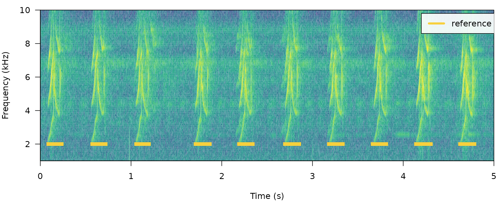
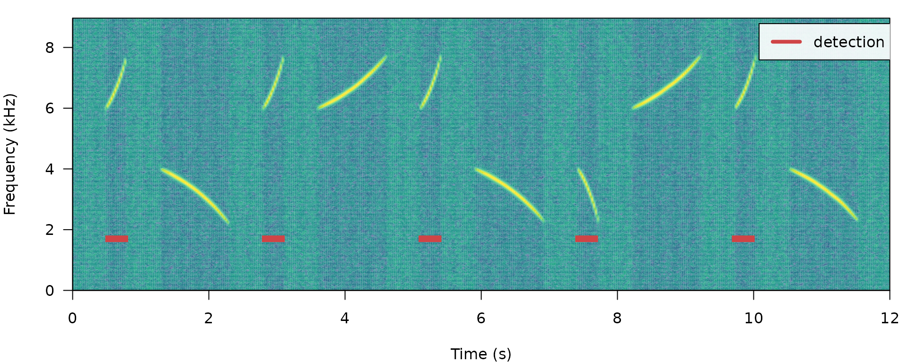

ohun: optimizing acoustic signal detection
Marcelo Araya-Salas, PhD
“2021-09-15”
Source: vignettes/ohun.Rmd
ohun.Rmd
ohun is intended to facilitate the automatic detection of acoustic signals, providing functions to diagnose and optimize detection routines. Detections from other software can also be explored and optimized.
The main features of the package are:
- The use of reference annotations for detection optimization and diagnostic
- The use of signal detection theory diagnostic parameters to evaluate detection performance
- The batch processing of sound files for improving computational performance
The package offers functions for:
- Diagnose detection performance
- Optimize detection routines based on reference annotations
- Energy-based detection
- Template-based detection
All functions allow the parallelization of tasks, which distributes the tasks among several processors to improve computational efficiency. The package works on sound files in ‘.wav’, ‘.mp3’, ‘.flac’ and ‘.wac’ format.
To install the latest developmental version from github you will need the R package devtools:
# install pacakge
devtools::install_github("maRce10/ohun")
#load package
library(ohun)
Let’s also create a couple of functions for plotting spectrograms along envelopes and/or highlighted detected signals:
# function to plot spectrograms and amplitude envelopes together
labeled_spectro <- function(wave, reference = NULL, detection = NULL, envelope = FALSE,
threshold = NULL, ...) {
# set graphic device
opar <- par()
on.exit(par(opar))
if (envelope)
par(mfrow = c(2, 1), mar = c(0, 4, 1, 1)) else par(mar = c(4, 4, 1, 1))
# plot spectrogram
seewave::spectro(wave, grid = FALSE, scale = FALSE, oma = c(0, 0, 0, 0), palette = viridis::viridis,
collevels = seq(-100, 0, 5), axisX = if (envelope)
FALSE else TRUE, ...)
# plot detection
if (!is.null(reference))
for (i in 1:nrow(reference)) lines(x = (reference[i, c("start", "end")]),
y = c(2, 2), col = "#F7D03CFF", lwd = 7, lend = 2)
# plot detection
if (!is.null(detection))
for (i in 1:nrow(detection)) lines(x = (detection[i, c("start", "end")]),
y = c(1.7, 1.7), col = "#CF4446FF", lwd = 7, lend = 2)
usr <- par("usr")
# add legend
if (!is.null(detection) & !is.null(reference))
legend(x = usr[2] * 0.84, y = usr[4] * 0.98, col = c("#F7D03CFF", "#CF4446FF"),
legend = c("reference", "detection"), lwd = 4, bg = "#FFFFFFE6")
if (is.null(detection) & !is.null(reference))
legend(x = usr[2] * 0.84, y = usr[4] * 0.98, col = c("#F7D03CFF"), legend = c("reference"),
lwd = 4, bg = "#FFFFFFE6")
if (is.null(reference) & !is.null(detection))
legend(x = usr[2] * 0.84, y = usr[4] * 0.98, col = c("#CF4446FF"), legend = c("detection"),
lwd = 4, bg = "#FFFFFFE6")
if (envelope) {
# set graphic device for envelope
par(mar = c(4, 4, 1, 1))
# plot envelope
seewave::env(wave, colwave = "#07889B")
# add threshold line
if (!is.null(threshold))
abline(h = par("usr")[4] * threshold, col = "#CF4446FF", lwd = 3)
}
}Signal detection theory applied to bioacoustics
Broadly speaking, signal detection theory deals with the process of recovering signals (i.e. target signals) from background noise (not necessarily acoustic noise) and it’s widely used for optimizing this decision making process in the presence of uncertainty. During a detection routine, the detected ‘items’ can be classified into 4 classes:
- True positives (TPs): signals correctly identified as ‘signal’
- False positives (FPs): background noise incorrectly identified as ‘signal’
- False negatives (FNs): signals incorrectly identified as ‘background noise’
- True negatives (TNs): background noise correctly identified as ‘background noise’
Several additional indices derived from these indices are used to evaluate the performance of a detection routine. These are two of the most commonly used:
- Sensitivity: proportion of target signals that were detected (a.k.a. true positive rate or recall; TPs / (TPs + FNs))
- Specificity: proportion of detected items that correspond to target signals ((TPs + FNs) / (TPs + FPs))
(Note that metrics that make use of ‘true negatives’ cannot be easily applied in the context of acoustic signal detection as noise cannot always be partitioned in discrete units)
A perfect detection will have no false positives or false negatives, which will result in both sensitivity and specificity equal to 1. However, perfect detection cannot always be reached and some compromise between detecting all target signals plus some noise (sensitivity = 1 & specificity < 1) and detecting only target signals but not all of them (sensitivity < 1 & specificity = 1) is warranted. The right balance between these two extremes will be given by the relative costs of missing signals and mistaking noise for signals. Hence, these indices provide an useful framework for diagnosing and optimizing the performance of a detection routine.
The package ohun provides a set of tools to evaluate the performance of an acoustic signal detection based on the indices described above. To accomplish this, the result of a detection routine is compared against a reference table containing the time position of all target signals in the sound files. The package comes with an example reference table containing annotations of long-billed hermit hummingbird songs from two sound files (also supplied as example data: ‘lbh_1’ and ‘lbh_2’), which can be used to illustrate detection performance evaluation. The example data can be visually explored as follows (the syntax package_name::function_name() will be used throughout the vignette to highlight functions coming from packages other than ohun):
# load example data
data(c("lbh_1", "lbh_2", "lbh_reference"))
# print spectrograms
labeled_spectro(wave = lbh_1, reference = lbh_reference[lbh_reference$sound.files ==
"lbh_1.wav", ], wl = 200, ovlp = 50, flim = c(1, 10))
labeled_spectro(wave = lbh_2, reference = lbh_reference[lbh_reference$sound.files ==
"lbh_2.wav", ], wl = 200, ovlp = 50, flim = c(1, 10))
The function diagnose_detection() evaluates the performance of a detection routine by comparing it to a reference table (which can be a data frame or ‘selection_table’ sensu warbleR). For intance, a perfect detection is given by comparing lbh_reference to itself:
lbh2_reference <- lbh_reference[lbh_reference$sound.files == "lbh_2.wav", ]
# diagnose
diagnose_detection(reference = lbh2_reference, detection = lbh2_reference)[, c(1:3,
7:8)]## true.positives false.positives false.negatives sensitivity specificity
## 1 10 0 0 1 1
Although this is a silly example, it shows the basic diagnostic indices, which include basic detection theory indices (‘true.positives’, ‘false.positives’, ‘false.negatives’, ‘sensitivity’ and ‘specificity’) mentioned above. We can play around with the reference table to see how these indices can be used to spot imperfect detection routines (and hopefully improve them!). For instance, we can remove some signals to see how this is reflected in the diagnostics. Getting rid of some rows in ‘detection’, simulating a detection with some false negatives, will affect the sensitivity but not the specificity:
# create new table
lbh2_detection <- lbh2_reference[3:9, ]
# print spectrogram
labeled_spectro(wave = lbh_2, reference = lbh2_reference, detection = lbh2_detection,
wl = 200, ovlp = 50, flim = c(1, 10))
# diagnose
diagnose_detection(reference = lbh2_reference, detection = lbh2_detection)[, c(1:3,
7:8)]## true.positives false.positives false.negatives sensitivity specificity
## 1 7 0 3 0.7 1
Having some additional signals not in reference will do the opposite, reducing specificity but not sensitivity (in this example we just need to switch the tables):
# print spectrogram
labeled_spectro(wave = lbh_2, detection = lbh2_reference, reference = lbh2_detection,
wl = 200, ovlp = 50, flim = c(1, 10))
# diagnose
diagnose_detection(reference = lbh2_detection, detection = lbh2_reference)[, c(1:3,
7:8)]## true.positives false.positives false.negatives sensitivity specificity
## 1 7 3 0 1 0.7
The function offers three additional diagnose metrics:
- Split positives: target signals overlapped by more than 1 detecion
- Merged positives: number of cases in which 2 or more target signals in ‘reference’ were overlapped by the same detection
- Proportional overlap of true positives: ratio of the time overlap of true positives with its corresponding signal in the reference table
In a perfect detection routine split and merged positives should be 0 while proportional overlap should be 1. We can shift the start of signals a bit to reflect a detection in which there is some mismatch to the reference table regarding to the time location of signals:
# create new table
lbh2_detection <- lbh2_reference
# add 'noise' to start
set.seed(18)
lbh2_detection$start <- lbh2_detection$start + rnorm(nrow(lbh2_detection), mean = 0,
sd = 0.1)
## print spectrogram
labeled_spectro(wave = lbh_2, reference = lbh2_reference, detection = lbh2_detection,
wl = 200, ovlp = 50, flim = c(1, 10))
# diagnose
diagnose_detection(reference = lbh2_reference, detection = lbh2_detection)## true.positives false.positives false.negatives split.positives
## 1 10 0 0 0
## merged.positives proportional.overlap.true.positives sensitivity specificity
## 1 0 0.5280701 1 1
In addition, the following diagnostic metrics related to the duration of the signals can also be returned by setting time.diagnostics = TRUE. Here we tweak the reference and detection data just to have some false positives and false negatives:
# diagnose with time diagnostics
diagnose_detection(reference = lbh2_reference[-1, ], detection = lbh2_detection[-10,
], time.diagnostics = TRUE)## true.positives false.positives false.negatives split.positives
## 1 8 1 1 0
## merged.positives proportional.overlap.true.positives
## 1 0 0.6103203
## mean.duration.true.positives mean.duration.false.positives
## 1 0.1387504 0.05524073
## mean.duration.false.negatives proportional.duration.true.positives
## 1 0.15845 1
## sensitivity specificity
## 1 0.8888889 0.8888889
These additional metrics can be used to further filter out undesired signals based on their duration (for instance in a energy_based detection as in energy_detector(), explained below).
Diagnostics can also be detailed by sound file:
# diagnose by sound file
diagnostic <- diagnose_detection(reference = lbh2_reference, detection = lbh2_detection,
by.sound.file = TRUE)
diagnostic## sound.files true.positives false.positives false.negatives split.positives
## 1 lbh_2.wav 10 0 0 0
## merged.positives proportional.overlap.true.positives sensitivity specificity
## 1 0 0.5280701 1 1
These diagnostics can be summarized (as in the default diagnose_detection() output) with the function summarize_diagnostic():
# summarize
summarize_diagnostic(diagnostic)## true.positives false.positives false.negatives split.positives
## 1 10 0 0 0
## merged.positives proportional.overlap.true.positives sensitivity specificity
## 1 0 0.5280701 1 1
Detecting signals with ohun
Energy-based detection
This detector uses amplitude envelopes to infer the position of signals. Amplitude envelopes are representations of the variation in energy through time. The following code plots an amplitude envelope along with the spectrogram for the example data lbh_2:
# plot spectrogram and envelope
labeled_spectro(wave = cutw(lbh_2, from = 0, to = 1.5, output = "Wave"), ovlp = 90,
wl = 300, flim = c(0, 10), env = TRUE)
It doesn’t require highly stereotyped signals, although they work better on high quality recordings in which the amplitude of target signals is higher than the background noise (i.e. high signal-to-noise ratio). The function ernergy_detector() performs this type of detection.
How it works
We can understand how to use ernergy_detector() using simulating animal signals. We will do that using the function simulate_songs() from warbleR. In this example we simulate a recording with 10 sounds with 2 different frequency ranges and durations:
# install this package first if not installed install.packages('Sim.DiffProc')
# Creating vector for duration
durs <- rep(c(0.3, 1), 5)
# Creating simulated song
set.seed(12)
simulated_1 <- warbleR::simulate_songs(n = 10, durs = durs, freqs = 5, sig2 = 0.01,
gaps = 0.5, harms = 1, bgn = 0.1, path = tempdir(), file.name = "simulated_1",
selec.table = TRUE, shape = "cos", fin = 0.3, fout = 0.35, samp.rate = 18)$wave
This is how the spectrogram and amplitude envelope of the simulated recording look like:
# plot spectrogram and envelope
labeled_spectro(wave = simulated_1, env = TRUE, fastdisp = TRUE)
Note that the amplitude envelope shows a high signal-to-noise ratio of the signals, which is ideal for energy-based detection. This can be conducted using ernergy_detector() as follows:
# run detection
detection <- energy_detector(files = "simulated_1.wav", bp = c(2, 8), threshold = 0.5,
min.duration = 0.001, path = tempdir(), pb = FALSE)
# plot spectrogram and envelope
labeled_spectro(wave = simulated_1, envelope = TRUE, detection = detection, threshold = 0.5)
Now we will make use of some additional arguments to filter out specific signals based on their structural features. For instance we can use the argument minimum.duration to provide a time treshold (in ms) to exclude short signals and keep only the longest signals:
# run detection
detection <- energy_detector(files = "simulated_1.wav", bp = c(1, 8), threshold = 0.5,
min.duration = 500, path = tempdir(), pb = FALSE)
# plot spectrogram
labeled_spectro(wave = simulated_1, detection = detection)
We can use the argument max.duration (also in ms) to exclude long signals and keep the short ones:
# run detection
detection <- energy_detector(files = "simulated_1.wav", bp = c(1, 8), threshold = 0.5,
min.duration = 1, max.duration = 500, path = tempdir(), pb = FALSE)
# plot spectrogram
labeled_spectro(wave = simulated_1, detection = detection)
We can also focus the detection on specific frequency ranges using the argument bp (bandpass). By setting bp = c(5, 8) we can detect those signals found within that frequency range (5-8 kHz), which excludes signals below 5 kHz:
# Detecting
detection <- energy_detector(files = "simulated_1.wav", bp = c(5, 8), threshold = 0.5,
min.duration = 1, path = tempdir(), pb = FALSE)
# plot spectrogram
labeled_spectro(wave = simulated_1, detection = detection)
The same logic can be applied to detect those signals found below 5 kHz. We just need to set the upper bound of the band pass filter below the range of the higher frequency signals (for instance bp = (0, 6)):
# Detect
detection <- energy_detector(files = "simulated_1.wav", bp = c(0, 6), threshold = 0.5,
min.duration = 1, path = tempdir(), pb = FALSE)
# plot spectrogram
labeled_spectro(wave = simulated_1, detection = detection)
Amplitude modulation (variation in amplitude across a signal) can be problematic for detection based on amplitude envelopes. We can also simulate some amplitude modulation using warbleR::simulate_songs():
# Creating simulated song
set.seed(12)
simulated_2 <- sim_songs(n = 10, durs = durs, freqs = 5, sig2 = 0.01, gaps = 0.5,
harms = 1, bgn = 0.1, path = tempdir(), file.name = "simulated_2", selec.table = TRUE,
shape = "cos", fin = 0.3, fout = 0.35, samp.rate = 18, am.amps = c(1, 2, 3, 2,
0.1, 2, 3, 3, 2, 1))$wave
# plot spectrogram
labeled_spectro(wave = simulated_2, envelope = TRUE)
When signals have strong amplitude modulation they can be split during detection:
# detect sounds
detection <- energy_detector(files = "simulated_2.wav", threshold = 0.5, min.duration = 1,
path = tempdir(), pb = FALSE)
# plot spectrogram
labeled_spectro(wave = simulated_2, envelope = TRUE, threshold = 0.5, detection = detection)
There are two arguments that can deal with this: holdtime and smooth. hold.time allows to merge split signals that are found within a given time range (in ms). This time range should be high enough to merge things belonging to the same signal but not too high so it merges different signals. For this example a hold.time of 200 ms can do the trick (we know gaps between signals are ~0.5 s long):
# detect sounds
detection <- energy_detector(files = "simulated_2.wav", threshold = 0.5, min.duration = 1,
path = tempdir(), pb = FALSE, hold.time = 200)
# plot spectrogram
labeled_spectro(wave = simulated_2, envelope = TRUE, threshold = 0.5, detection = detection)
smooth works by merging the amplitude envelope ‘hills’ of the split signals themselves. It smooths envelopes by applying a sliding window averaging of amplitude values. It’s also given in ms, which control the size of the window. A smooth of XX ms can merged back split signals from our example:
# detect sounds
detection <- energy_detector(files = "simulated_2.wav", threshold = 0.5, min.duration = 1,
path = tempdir(), pb = FALSE, smooth = 2)
# plot spectrogram
labeled_spectro(wave = simulated_2, envelope = TRUE, threshold = 0.5, detection = detection)
Please cite ohun as follows:
Araya-Salas, M. (2020), ohun: automatic detection of acoustic signals. R package version 0.1.0.
UNDER DEVELOPMENT
Observaciones:
avoid having overlapping selections in reference (check with overlapping_sels())
downsample to a freq range just enough for the signals of interest
use hop.size instead of wl
after split_sound_files() another function that returns the position in the original unsplit sound file
count number of detections per unit of time
References
- Araya-Salas, M. (2021), ohun: automatic detection of acoustic signals. R package version 0.1.0.
- Araya-Salas M, Smith-Vidaurre G (2017) warbleR: An R package to streamline analysis of animal acoustic signals. Methods Ecol Evol 8:184-191.
- Macmillan, N. A., & Creelman, C. D. (2004). Detection theory: A user’s guide. Psychology press.
Session information
## R version 4.1.0 (2021-05-18)
## Platform: x86_64-pc-linux-gnu (64-bit)
## Running under: Ubuntu 20.04.2 LTS
##
## Matrix products: default
## BLAS: /usr/lib/x86_64-linux-gnu/atlas/libblas.so.3.10.3
## LAPACK: /usr/lib/x86_64-linux-gnu/atlas/liblapack.so.3.10.3
##
## locale:
## [1] LC_CTYPE=pt_BR.UTF-8 LC_NUMERIC=C
## [3] LC_TIME=es_CR.UTF-8 LC_COLLATE=pt_BR.UTF-8
## [5] LC_MONETARY=es_CR.UTF-8 LC_MESSAGES=pt_BR.UTF-8
## [7] LC_PAPER=es_CR.UTF-8 LC_NAME=C
## [9] LC_ADDRESS=C LC_TELEPHONE=C
## [11] LC_MEASUREMENT=es_CR.UTF-8 LC_IDENTIFICATION=C
##
## attached base packages:
## [1] stats graphics grDevices utils datasets methods base
##
## other attached packages:
## [1] ohun_0.1.0 warbleR_1.1.27 NatureSounds_1.0.4 knitr_1.33
## [5] seewave_2.1.8 tuneR_1.3.3.1
##
## loaded via a namespace (and not attached):
## [1] Rcpp_1.0.7 fftw_1.0-6 assertthat_0.2.1 rprojroot_2.0.2
## [5] digest_0.6.27 utf8_1.2.2 R6_2.5.0 Sim.DiffProc_4.8
## [9] signal_0.7-7 evaluate_0.14 ggplot2_3.3.5 highr_0.9
## [13] pillar_1.6.1 rlang_0.4.11 jquerylib_0.1.4 rmarkdown_2.9
## [17] pkgdown_1.6.1 textshaping_0.3.5 desc_1.3.0 stringr_1.4.0
## [21] RCurl_1.98-1.4 munsell_0.5.0 proxy_0.4-26 Deriv_4.1.3
## [25] compiler_4.1.0 xfun_0.25 pkgconfig_2.0.3 systemfonts_1.0.2
## [29] htmltools_0.5.1.1 tidyselect_1.1.1 tibble_3.1.3 gridExtra_2.3
## [33] dtw_1.22-3 fansi_0.5.0 viridisLite_0.4.0 crayon_1.4.1
## [37] dplyr_1.0.7 MASS_7.3-54 bitops_1.0-7 grid_4.1.0
## [41] jsonlite_1.7.2 gtable_0.3.0 lifecycle_1.0.0 DBI_1.1.1
## [45] magrittr_2.0.1 formatR_1.11 scales_1.1.1 stringi_1.7.4
## [49] cachem_1.0.5 pbapply_1.4-3 viridis_0.6.1 fs_1.5.0
## [53] bslib_0.2.5.1 ellipsis_0.3.2 ragg_1.1.3 vctrs_0.3.8
## [57] generics_0.1.0 rjson_0.2.20 tools_4.1.0 glue_1.4.2
## [61] purrr_0.3.4 parallel_4.1.0 fastmap_1.1.0 yaml_2.2.1
## [65] colorspace_2.0-2 memoise_2.0.0 sass_0.4.0